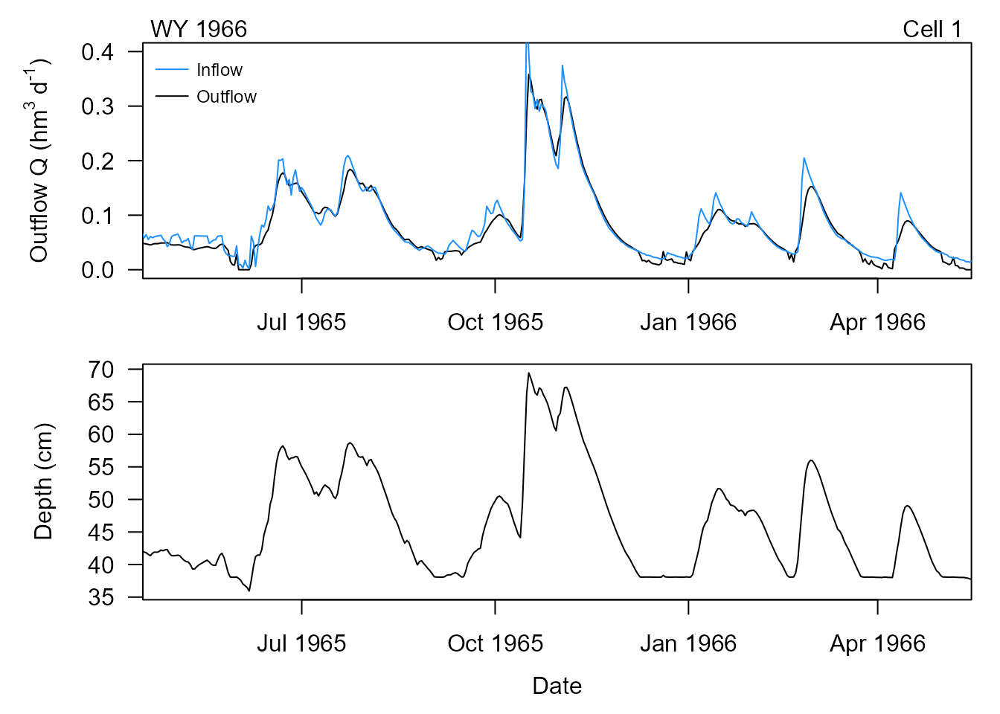
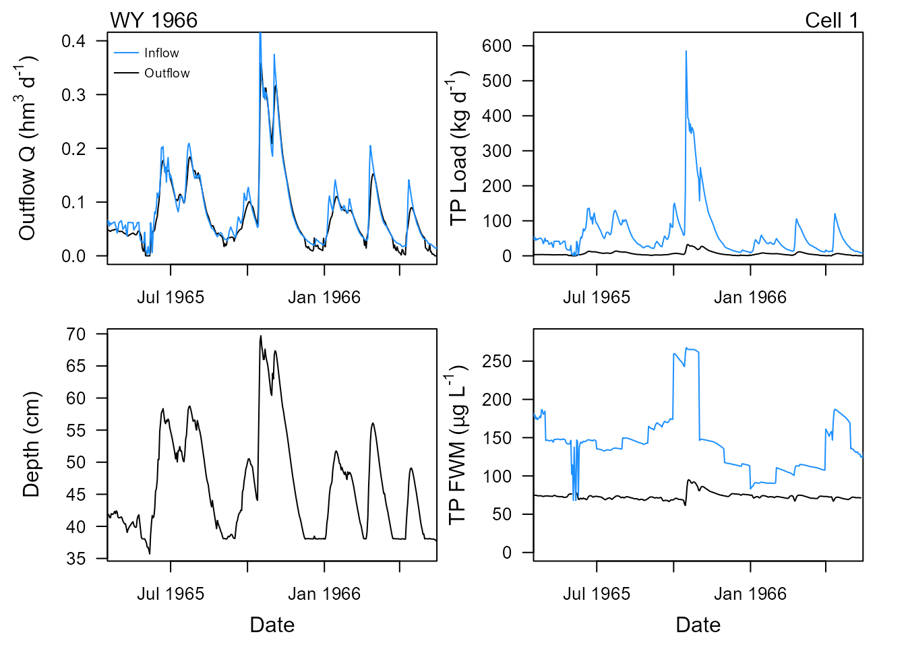
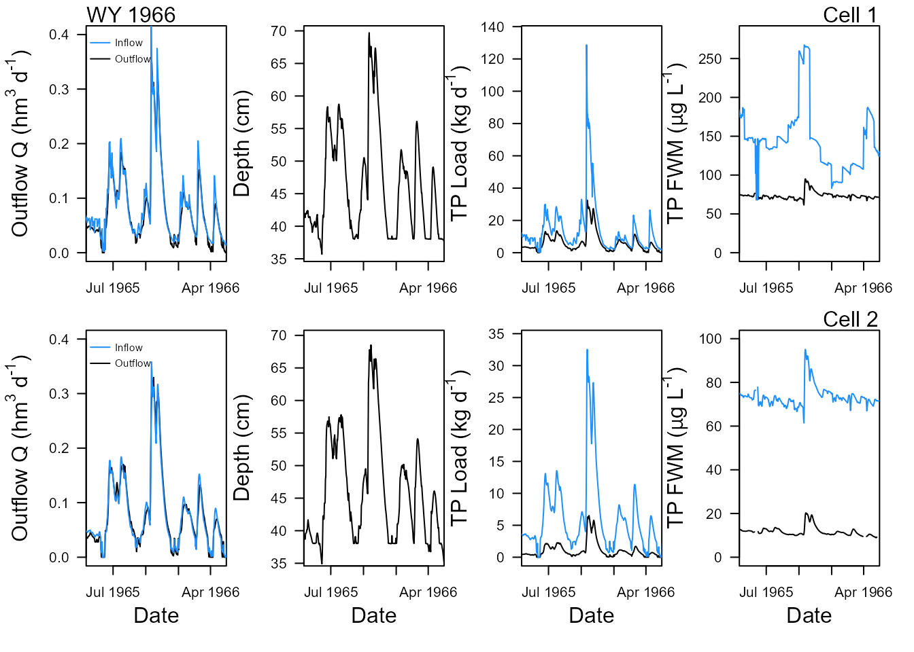

DMSTAr is an R implementation of core concepts from the Dynamic Model for Stormwater Treatment Areas (DMSTA), focused on daily phosphorus transport and treatment.
The package is designed to: - simulate single treatment cells or networks of cells (“cases”) - reproduce DMSTA-style daily mass balance behavior - support transparent, reproducible workflows in R
This vignette provides a practical introduction to the main ideas and a minimal working example.
Before running a model, it hepls to understand a few core
terms/concepts used throghout DMSTAr taken from DMSTA. For
more information on DMSTA specifically, please visit the DMSTA2 webpage.
A case represents a single modeled unit (e.g., an STA cell, reservoir, or reach). Each case has: - inflows and outflows - a water volume - phosphorus mass and concentration
Cases can be connected into a network, where outflow from one case becomes inflow to another. Routing is defined explicitly using fractions and (optionally) lags.
DMSTAr operates on a daily timestep and conserves mass by tracking: - water volume - phosphorus load - concentration derived from mass and volume
Below are a couple of examples of how use the functions in this
R-package to do simple simulations. The three main modeling functions in
DMSTAr is dmsta_flow_series(...) (single cell
hydrology only), dmsta_flowP_series(...) (single cell
hydrology and P) and dmsta_flowP_case(...) (networked
hydrology and P). Each function requires input parameters and input
(i.e. forcing) data to simulate outflow conditions.
For input data purposes we will use the internal data series in this package:
To see what this is use ?DMSTAr::series
For purposes of this demonstration we will use only the first year and half of the example input data frame.
# for example, limit input file
series <- series[1:540,];
# Data formatting
series$Qi <- cfs_to_hm3d(series$Flow) # cfs to hm3/d
series$Rain <- in_to_m(series$Rainfall) # inches to meters per day
series$Et <- in_to_m(series$ET)
series$Zcontrol <- cm_to_m(0) # meters; setting to zero to see what happens
# If you have release series; otherwise set to 0
series$Qr0 <- 0 # constrained outflow (forced Q) if used
series$Qr1 <- 0 # release 1
series$Qr2 <- 0 # release 2
series$Ci <- series$Conc
# input parameters
params <- list(
A_cell = 2.19, # cell area; km2
Zmin = 2, # minimum depth; cm
Vmin = 0, # minimum volume; hm3
Q_a = 1.0, # discharge coef
Q_b = 4.0, # discharge exponent
Zweir = 0, # depth offset for outflow computation; cm
Q_zmin = 38, # minimum depth of discharge; cm
Qomax = 0.0, # maximum discharge hm3/day
Qimax = 0, # maximum inflow (hm3/day)
Width = 1.55, # cell widthl km
Bypass_elev = 0, # mean depth at which bypass begins, cm
Seepout_Rate = 0.00789, # outflow seepage rate per unit head; cm/d/cm
Seepout_Elev = 0.0, # elevation controlling outflow seepage rate; cm
Seepin_Rate = 0.0, # seepage inflow rate; ; cm/d/cm
Seepin_Elev = 0.0, # elevation controlling inflow seepage rate; cm
ShutdownET = TRUE,
force_Q_out = FALSE,
wrap_interp = TRUE,
Zinit = 40, # initial water column depth; cm
Qin_Frac = 0.22, # fraction of basin flows going into this cell
Zrelease = 0, # minimum depth for releases; cm
RecycleQ = 0
)
# initial volume (based on input values)
V_init <- (cm_to_m(params$Zinit) * params$A_cell)
out_hydro <- dmsta_flow_series(
series = series,
params = params,
Nsteps = 4)
hydro_rslt <- out_hydro$results
# convert water depth from meter to centimeters
hydro_rslt$Z_end_cm <-m_to_cm(hydro_rslt$Z_end)
str(out_hydro)Each function provides a list of data.frames including results
(out$results), daily water budget
(out$budgets$water) and metadata
(out$meta).

Simulated outflow discharge (top) and water level (bottom).
## Phosphorous Modeling parameters
pparams <- list(
DutyCycle = 0.95,
Cmax = 2000,
C1000 = 22,
Cstar = 3,
Ks_per_yr = 16.8,
Z1 = 40,
Z2 = 100,
Z3 = 200,
Chalf = 300,
K2Coef1 = 0,
Ytrans = 0,
Ysigma = 0,
Czero = 0,
C_rain = 10,
DryDepo = 20,
SeasonalFactor = 0,
C1000_2 = NULL,
ks_2 = 0,
zh_2 = 0,
k_depth_penalty = 1,
seepage_c = 20,
seepin_conc = 0,
C_init_ppb = 30,
Y_init_mgm2 = 3387.67297548954,
n_tanks = 3,
Nsteps = 4
)
# Add the hydrology parameters (above) to the P parameters
params <- modifyList(params,pparams)
## choose model structure
ttankS <- params$n_tanks # tanks in series (can be fractional)
Nsteps <- params$Nsteps # RK substeps per day
## build tank geometry once
tanks <- dmsta_build_tanks(params$A_cell, ttankS)
## build kinetics once: 3 modules STA/PSTA/RES
ppar <- build_P_kin_slots(
mods = c("STA", "PSTA", "RES"),
pparams = params,
Dpy = 365.25,
DutyCycle = params$DutyCycle)
# A function to validation/check input parameters
validate_P_paramsK(ppar)
## constants
constants <- list(
Cmax = params$Cmax,
C_rain = params$C_rain,
DryDepo = params$DryDepo / 365.25, # convert to mg/m2-day
seepin_conc = params$seepin_conc,
seepout_conc_max = params$seepage_c,
fseep_recycle = 0,
fseep_out = 0
)
## initial conditions
Z_init_m <- cm_to_m(params$Zinit)
V_init <- params$A_cell * Z_init_m
P_state0 <- dmsta_p_init_state(
tanks,
Z_init_m = Z_init_m,
C_init_ppb = params$C_init_ppb,
Y_init_mgm2 = params$Y_init_mgm2
)
hydroP_out <- dmsta_flowP_series(
series = series,
params = params,
ttankS = ttankS,
Nsteps = Nsteps,
tanks = tanks,
ppar = ppar,
constants = constants,
V_init = V_init,
init_P_state = P_state0,
return_steps = FALSE
)
hydroP_rslt <- hydroP_out$results
hydroP_rslt$Z_end_cm <-m_to_cm(hydroP_rslt$Z_end)
str(hydroP_out)Similarly to the hydrology outputs out contains a list
of data frames, the only difference in this function also include a P
mass balance budget, to view see out$budgets$mass.

Simulated outflow discharge (top left), water level (bottom left), TP load (top right) and TP concentration (bottom right).
dmsta_flowP_case allows for the simulation of cells in
series where for example, Cell 1 flows into Cell 2. It is part wrapper
function but also links more complex interactions of seepage and
recycled discharge/load between cells.
# input parameters
# 1) Base hydrology params (shared structure)
hydro_base <- list(
A_cell = 2.19, # km2
# depths in cm
Zmin = 2, # cm
Zinit = 40, # cm
Zweir = 0, # cm
Q_zmin = 38, # cm
Zrelease = 0, # cm
Bypass_elev = 0,
# hydraulics
Q_a = 1.0,
Q_b = 4.0,
Width = 1.55, # km
Qomax = 0.0, # hm3/day; 0 disables max cap in this implementation
Qimax = 0.0, # hm3/day; 0 disables inflow cap
# seepage (rates in m/day per m head; elevations in cm)
Seepout_Rate = 0.0,
Seepout_Elev = 0.0, # cm
Seepin_Rate = 0.0,
Seepin_Elev = 0.0, # cm
ShutdownET = TRUE,
force_Q_out = FALSE,
DutyCycle = 0.95,
Cmax = 2000
)
# 2) Base P params (shared structure)
P_base <- list(
# STA module
C1000 = 22,
Cstar = 3,
Ks_per_yr = 16.8,
Z1 = 40,
Z2 = 100,
Z3 = 200,
Chalf = 300,
K2Coef1 = 0,
SeasonalFactor = 0, # keep 0 for base parity
# PSTA (NEWS transition)
Ytrans = 0,
Ysigma = 0,
Czero = 0,
C1000_2 = NULL,
ks_2 = 0,
zh_2 = 0,
# RES depth penalty
k_depth_penalty = 1,
# atmos + seepage water quality
C_rain = 10, # ppb (ug/L)
DryDepo = 20, # mg/m2-yr
seepage_c = 20, # ppb cap for seep outflow
seepin_conc = 0, # ppb
# initial P state
C_init_ppb = 30,
Y_init_mgm2 = 1000
)
# 3) Cell-specific params
params_cell1 <- modifyList(hydro_base, modifyList(P_base, list(
Qin_Frac = 0.22,
Seepout_Rate = 0.00789,
Ks_per_yr = 16.8,
Y_init_mgm2 = 3387.67297548954
)))
params_cell2 <- modifyList(hydro_base, modifyList(P_base, list(
Qin_Frac = 0,
Seepout_Rate = 0.00155,
Ks_per_yr = 52.5,
Y_init_mgm2 = 768.480041186681
)))
# 4) Build cells
cells <- list(
dmsta_make_cell(
label = "CELL1",
params = params_cell1,
ttankS = 3.0,
DownCell = 2L,
Qin_Frac = params_cell1$Qin_Frac,
RecycleIndex = 1L # self; can omit if your validator maps NA/0 -> self
),
dmsta_make_cell(
label = "CELL2",
params = params_cell2,
ttankS = 3.0,
DownCell = 0L,
Qin_Frac = params_cell2$Qin_Frac,
RecycleIndex = 2L # self
)
)
cells <- dmsta_validate_cells(cells)
# Run case
hydroP_net_rslt <- dmsta_flowP_case(
series = series,
cells = cells,
Nsteps = 4L,
max_iter = 1L,
return_cell_series = TRUE,
keep_Q17 = TRUE
)
hydroP_case_rslt <- hydroP_net_rslt$results$case
hydroP_cells_rslt <- hydroP_net_rslt$results$cells
Much like the other functions this function stores results, water and mass budgets and meta data. The difference being this function stores the data at the “case” level (inflow to cell 1 and outflow of cell 2) as well as cell specific information.

Simulated outflow discharge, water level, TP load and TP concentration for cell 1 (top) and cell 2 (bottom).
Here is example code on how to perform a case network simulation. Due to the involved nature of this process, this code is here just as an example but given processes above it can be easily replicated given the necessary data.
# 1) Build cases
cases <- list(
STA1_DW = list(
series_base = STA1_DW_input, # data.frame with Date, Qi, Ci, Rain, Et, Zcontrol
cells = STA1_DW_cell # list of dmsta_make_cell(...) objects
),
STA1W = list(
series_base = STA1W_input,
cells = STA1W_cell
)
)First, you need to build the cases. It is simply a list with case name, input data and cell specific information.
# 2) Build/parse routes
net <- data.frame(
CaseName = c("STA1_DW", "STA1W"),
Bypass_to = c("", ""),
Release1_to = c("", ""),
Release2_to = c("", ""),
Outflow_to = c("STA1W", "1"),
Seepage_to = c("", ""),
stringsAsFactors = FALSE
)
routes <- build_routes_from_net_table(net, outlet_count = 1L)Next is defining the case network where you can specify the where the
different outflow can be routed to. For instance, above networks
STA1_DW outflow to STA1W then
STA1W is discharged to OUTLET 1. This can be
as complicated as you’d like. For instance here is the Eastern and
Central flow-path network simulation for the Everglades STAs as part of
the Restoration Strategies modeling efforts.
EC_network <- data.frame(CaseName = c("FEB55A_N", "FEB_S5A", "FEBS5A_OUT",
"STA1_DW", "STA1W", "STA1E", "FEB_34", "FEB34_OUT", "STA2B",
"STA34"),
Bypass_to = c("FEB_S5A", "STA1_DW", "STA1_DW", "STA1E",
"1", "2", "STA34", "STA34", "3", "4"),
Release1_to = c("FEB_S5A",
"STA1_DW", NA, NA, NA, NA, "STA34", NA, NA, NA),
Release2_to = c("5",
"5", NA, NA, NA, NA, "STA2B", NA, NA, NA),
Outflow_to = c("FEB_S5A",
"FEBS5A_OUT", "STA2B", "STA1W", "1", "2", "FEB34_OUT", "STA2B",
"3", "4"),
Seepage_to = c(NA, NA, NA, NA, NA, NA, "FEB34_OUT",
NA, NA, NA))
EC_routes <- build_routes_from_net_table(EC_network, outlet_count = 5)
t(EC_network)
#> [,1] [,2] [,3] [,4] [,5] [,6]
#> CaseName "FEB55A_N" "FEB_S5A" "FEBS5A_OUT" "STA1_DW" "STA1W" "STA1E"
#> Bypass_to "FEB_S5A" "STA1_DW" "STA1_DW" "STA1E" "1" "2"
#> Release1_to "FEB_S5A" "STA1_DW" NA NA NA NA
#> Release2_to "5" "5" NA NA NA NA
#> Outflow_to "FEB_S5A" "FEBS5A_OUT" "STA2B" "STA1W" "1" "2"
#> Seepage_to NA NA NA NA NA NA
#> [,7] [,8] [,9] [,10]
#> CaseName "FEB_34" "FEB34_OUT" "STA2B" "STA34"
#> Bypass_to "STA34" "STA34" "3" "4"
#> Release1_to "STA34" NA NA NA
#> Release2_to "STA2B" NA NA NA
#> Outflow_to "FEB34_OUT" "STA2B" "3" "4"
#> Seepage_to "FEB34_OUT" NA NA NA
# 3) Run network
out <- run_network_of_cases(
cases = cases,
routes = routes,
Nsteps = 4L,
return_cell_series = TRUE
)In the third step, the actual simulation occurs similar to the
dmsta_flowP_case example above but for each case within the
estimated network. Outputs are similar but also includes some additional
outputs.